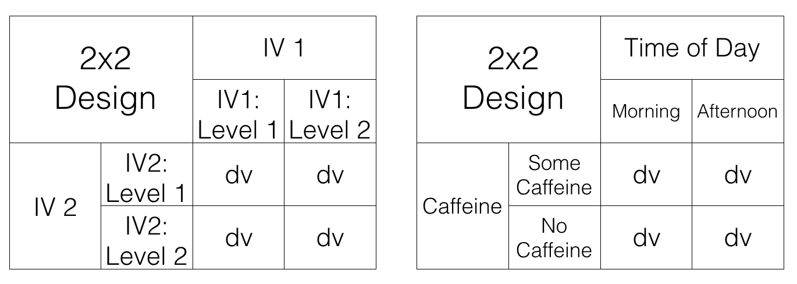
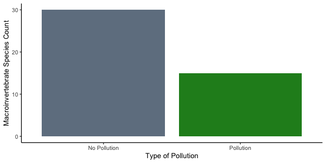
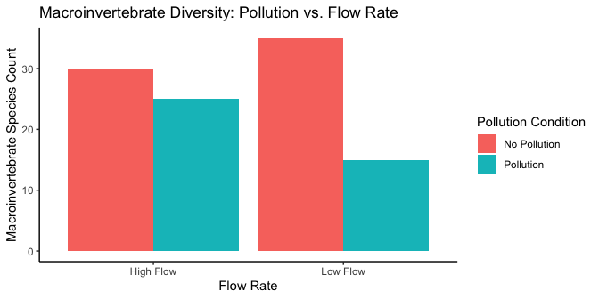

10 Factorial ANOVA
In environmental science, outcomes rarely depend on just one thing. Climate, soil type, and water availability all act together, shaping ecosystems in ways a single-factor design can’t capture. Factorial designs let us study several factors, and how they interact with each other, at once.
This chapter focuses on computation: how to build a factorial ANOVA from the data up, including a full by-hand walkthrough of the sums-of-squares arithmetic. The next chapter, More on Factorial Designs, focuses on interpretation: how to read, report, and reason about the results once you have them. If you’re looking for how to explain a main effect or an interaction rather than how to calculate one, that’s the chapter to go to.
Imagine investigating the growth rate of a plant species, with independent variables like soil pH or sunlight exposure. Each added IV multiplies the number of conditions you can observe, and with it, the questions you can ask about how those factors work together.
Let’s look at a few factorial design examples in an environmental setting:
- 1 IV (two levels)
A t-test would suffice here, as we are dealing with just two levels of our independent variable.
Soil pH (Acidic vs. Neutral): How does soil pH affect plant growth? We have one IV (soil pH), with two levels (Acidic vs. Neutral).
Sunlight Exposure (Full Sun vs. Partial Shade): Does the amount of sunlight influence plant growth rates? Here, there’s one IV (sunlight exposure), with two levels (Full Sun vs. Partial Shade).
- 1 IV (three levels):
An ANOVA is appropriate here, given the variable has more than two levels.
Water Availability (Low, Medium, High): How does varying water availability impact plant growth? Our single IV (water availability) has three levels (Low, Medium, High).
Fertilizer Type (No fertilizer, Organic, Synthetic): What’s the effect of different fertilizer types on plant growth? One IV (fertilizer type) has three levels.
- 2 IVs: IV1 (two levels), IV2 (two levels)
We would employ a factorial ANOVA for this design, which we haven’t discussed yet.
- IV1 (Soil pH: Acidic vs. Neutral); IV2 (Water Availability: Low vs. High): How do soil pH and water availability together affect plant growth? Each IV has two levels, leading to a 2x2 Factorial Design. This type of design is fully crossed: each level of one IV is paired with each level of the other IV, so the combined effect on growth rates can be observed.
The first two designs above both had one IV. The third has two (soil pH and water availability), each with two levels, giving a 2x2 Factorial Design. It’s called a factorial design because the levels of each independent variable are fully crossed: every level of one IV occurs alongside every level of the other.
10.1 Factorial basics
Why This Matters: Factorial designs let us study how multiple environmental drivers act together. This is often a more realistic picture of environmental systems.
10.1.1 2x2 Designs
We’ve just started talking about a 2x2 Factorial design. We said this means the IVs are crossed. To illustrate this, take a look at Figure 10.1. We show an abstract version and a concrete version using soil pH and water availability as the two IVs, each with two levels in the design:
- IV1: Soil Type (Clay vs. Loam)
- IV2: Drought Condition (Yes vs. No)
Each combination of soil type and drought condition creates a unique environment for the plants, giving four distinct scenarios to measure growth rates: 2 IVs, each with 2 levels, for 2x2 = 4 conditions total. The notation directly tells you the number of conditions.
10.1.2 Factorial Notation
Anytime all of the levels of each IV in a design are fully crossed, so that they all occur for each level of every other IV, we can say the design is a fully factorial design.
Our notation system succinctly encapsulates the structure of factorial designs. Each IV gets a number representing its levels. Here are a few examples:
2x2: Two IVs, each with two levels, yielding four unique conditions.
2x3: Two IVs, with the first having two levels and the second three, resulting in six conditions.
3x2: Similar to the 2x3, but the first IV has three levels, and the second has two, also giving us six conditions.
4x4: Two IVs, each with four levels, resulting in sixteen conditions.
Expanding on our designs, a 2x3 factorial design could investigate the impact of two soil types across three different levels of water availability, equating to six unique conditions to analyze plant growth.
10.2 Why factorial designs matter
Factorial designs let us ask more nuanced questions than a single-factor study can. Suppose we’re measuring aquatic macroinvertebrate species diversity (our DV) under pollution exposure. A one-factor design gives us a Pollution effect: the difference in diversity between polluted and unpolluted water, shown in Figure 10.2.

A factorial design lets us ask a follow-up question a one-factor design can’t: does the Pollution effect itself depend on some other condition? Add flow rate (low vs. high) as a second IV, and now there are four condition means instead of two: Pollution/Flow, Pollution/no-Flow, no-Pollution/Flow, and no-Pollution/no-Flow. That lets us compare the Pollution effect within each flow condition, shown in Figure 10.3.

Under low flow, diversity drops sharply with pollution (35 to 15, a difference of 20). Under high flow, the drop is much smaller (30 to 25, a difference of 5). The Pollution effect isn’t constant, it depends on flow rate. This is called an interaction: the effect of one factor (Pollution) changes depending on the level of another (Flow).
That’s the core payoff of a factorial design: it doesn’t just tell you whether a manipulation has an effect, it tells you what changes that effect’s size. The next chapter, More on Factorial Designs, covers how to read and report main effects and interactions like this one in depth. For the rest of this chapter, we compute a factorial ANOVA from the data up, first for a repeated-measures design, then for a between-subjects design.
10.3 Simplified Analysis of 2x2 Repeated Measures Design
Before writing out full ANOVA syntax, it’s worth seeing that a 2x2 repeated-measures design can be analyzed with paired-samples \(t\)-tests directly, giving identical results. This is a less common approach in practice, but working through it makes clear exactly what a factorial ANOVA’s main effects and interaction term are actually testing before the machinery hides those comparisons inside a single R call.
Main effects and interactions are the two things any factorial design lets you test. How many of each you get depends on the number of IVs in the design.
10.3.1 Main Effects
A main effect is the average difference associated with a single IV, one main effect per IV. A 2x2 design has two IVs, so two main effects, here one for Pollution and one for Flow. A significant main effect means the observed difference is unlikely to be due to chance.
A 2x2x2 design has three main effects, one per IV; a 3x3x3 design also has three, since the number of main effects tracks the number of IVs, not their levels.
10.3.2 Interaction
An interaction occurs when the effect of one IV depends on the level of another. In our example, the size of the Pollution effect depended on Flow: larger under low flow, smaller under high flow.
Equivalently, an interaction is a difference between differences: if the Pollution effect (the gap between polluted and unpolluted outcomes) itself changes across Flow conditions, that’s an interaction.
The number of possible interactions scales with the number of IVs. A 2x2 design has exactly one interaction, the combined effect of the two IVs. A design with three IVs (A, B, C) has three 2-way interactions (AB, AC, BC) and one 3-way interaction (ABC).
10.3.3 Looking at the data
Consider a hypothetical study on macroinvertebrate diversity, with five experimental tanks that each experience all four conditions, making this a fully repeated-measures design. The dataset might look something like this:
| subject | A | B | C | D |
|---|---|---|---|---|
| 1 | 10 | 5 | 12 | 9 |
| 2 | 8 | 4 | 13 | 8 |
| 3 | 11 | 3 | 14 | 10 |
| 4 | 9 | 4 | 11 | 11 |
| 5 | 10 | 2 | 13 | 12 |
10.3.4 Main effect of Pollution
To assess the main effect of Pollution, we compare the mean scores across the no-Pollution and Pollution conditions, regardless of the Flow conditions.
| subject | A | B | C | D | Mean_No_Pollution | Mean_Pollution | Pollution_Effect |
|---|---|---|---|---|---|---|---|
| 1 | 10 | 5 | 12 | 9 | 11 | 7 | 4 |
| 2 | 8 | 4 | 13 | 8 | 10.5 | 6 | 4.5 |
| 3 | 11 | 3 | 14 | 10 | 12.5 | 6.5 | 6 |
| 4 | 9 | 4 | 11 | 11 | 10 | 7.5 | 2.5 |
| 5 | 10 | 2 | 13 | 12 | 11.5 | 7 | 4.5 |
| Means | 11.1 | 6.8 | 4.3 |
The mean score is 11.1 in the no-Pollution condition and 6.8 in the Pollution condition, so the main effect of Pollution is their difference, 4.3.
To test whether that difference is likely due to chance, we can run a paired-samples \(t\)-test comparing the mean no-Pollution and Pollution scores for each tank, or equivalently a one-sample \(t\)-test on the Pollution effect scores against a mean difference of zero. Both give the same conclusion.
For the paired-samples version, we compare the Mean_No_Pollution and Mean_Pollution columns directly:
#>
#> Welch Two Sample t-test
#>
#> data: as.numeric(fake_data$Mean_No_Pollution[1:5]) and as.numeric(fake_data$Mean_Pollution[1:5], paired = TRUE)
#> t = 8.6, df = 6.502, p-value = 8.726e-05
#> alternative hypothesis: true difference in means is not equal to 0
#> 95 percent confidence interval:
#> 3.099079 5.500921
#> sample estimates:
#> mean of x mean of y
#> 11.1 6.8For the one-sample t-test, we test whether the mean difference (Pollution effect) is significantly different from zero:
#>
#> One Sample t-test
#>
#> data: as.numeric(fake_data$Pollution_Effect[1:5])
#> t = 7.6615, df = 4, p-value = 0.00156
#> alternative hypothesis: true mean is not equal to 0
#> 95 percent confidence interval:
#> 2.741724 5.858276
#> sample estimates:
#> mean of x
#> 4.3A write-up of this result could read:
The main effect of Pollution was significant, \(t\)(4) = 7.66, \(p\) = 0.001. The mean biodiversity was higher in the no-Pollution condition (M = 11.1) than the Pollution condition (M = 6.8).
10.3.5 Main effect of Flow
The main effect of Flow compares the overall means for the Low Flow and High Flow conditions, collapsing over Pollution.
The yellow columns below show each subject’s (tank’s) two Low Flow scores; the gray columns show the two High Flow scores. The AB and CD columns to the right average each subject’s scores within Low Flow and High Flow respectively; for example, subject 1 scored 10 and 5 in Low Flow, averaging to 7.5. The main effect of Flow is the difference between the AB and CD columns, shown per subject in the last column and averaged across subjects in the bottom row.
| subject | A | B | C | D | AB | CD | CD.minus.AB |
|---|---|---|---|---|---|---|---|
| 1 | 10 | 5 | 12 | 9 | 7.5 | 10.5 | 3 |
| 2 | 8 | 4 | 13 | 8 | 6 | 10.5 | 4.5 |
| 3 | 11 | 3 | 14 | 10 | 7 | 12 | 5 |
| 4 | 9 | 4 | 11 | 11 | 6.5 | 11 | 4.5 |
| 5 | 10 | 2 | 13 | 12 | 6 | 12.5 | 6.5 |
| Means | 6.6 | 11.3 | 4.7 |
The means alone suggest a main effect of Flow: 11.3 in High Flow versus 6.6 in Low Flow, a difference of 4.7.
Is a difference of this size likely or unlikely due to chance? A paired-samples \(t\)-test on the AB vs. CD means, or a one-sample \(t\)-test on the difference scores, both give the same answer:
Here’s the paired-samples version:
#>
#> Paired t-test
#>
#> data: CD and AB
#> t = 8.3742, df = 4, p-value = 0.001112
#> alternative hypothesis: true mean difference is not equal to 0
#> 95 percent confidence interval:
#> 3.141724 6.258276
#> sample estimates:
#> mean difference
#> 4.7Here’s the one sample version:
#>
#> One Sample t-test
#>
#> data: CD - AB
#> t = 8.3742, df = 4, p-value = 0.001112
#> alternative hypothesis: true mean is not equal to 0
#> 95 percent confidence interval:
#> 3.141724 6.258276
#> sample estimates:
#> mean of x
#> 4.7A write-up of this result could read:
The main effect of Flow was significant, t(4) = 8.37, p = 0.001. The mean number of species was higher in High Flow (M = 11.3) than Low Flow (M = 6.6).
10.3.6 Interaction between Pollution and Flow
Neither main effect above answers the actual question this study was designed for: does Flow change the size of the Pollution effect?
Answering that takes two steps: compute the Pollution effect for each subject under Low Flow, then compute it again under High Flow.
Comparing those two Pollution effects is the interaction effect, a difference between two difference scores. First we get each subject’s Pollution-effect difference score under Low Flow and under High Flow; then we find the difference between those two differences. That’s the interaction effect, shown in the green column below.
| subject | A | B | C | D | A-B | C-D | (A-B)-(C-D) |
|---|---|---|---|---|---|---|---|
| 1 | 10 | 5 | 12 | 9 | 5 | 3 | 2 |
| 2 | 8 | 4 | 13 | 8 | 4 | 5 | -1 |
| 3 | 11 | 3 | 14 | 10 | 8 | 4 | 4 |
| 4 | 9 | 4 | 11 | 11 | 5 | 0 | 5 |
| 5 | 10 | 2 | 13 | 12 | 8 | 1 | 7 |
| Means | 6 | 2.6 | 3.4 |
The mean Pollution effect was 6 under Low Flow and 2.6 under High Flow, a difference, and interaction effect, of 3.4.
To test whether that interaction is likely due to chance, run a paired-samples \(t\)-test between the two Pollution-effect measures for each subject, or a one-sample \(t\)-test on the green column (the difference of differences). Both give the same result:
Here’s the paired-samples version:
#>
#> Paired t-test
#>
#> data: A_B and C_D
#> t = 2.493, df = 4, p-value = 0.06727
#> alternative hypothesis: true mean difference is not equal to 0
#> 95 percent confidence interval:
#> -0.3865663 7.1865663
#> sample estimates:
#> mean difference
#> 3.4Here’s the one sample version:
#>
#> One Sample t-test
#>
#> data: A_B - C_D
#> t = 2.493, df = 4, p-value = 0.06727
#> alternative hypothesis: true mean is not equal to 0
#> 95 percent confidence interval:
#> -0.3865663 7.1865663
#> sample estimates:
#> mean of x
#> 3.4At \(\alpha=.05\), the interaction is not significant: \(t\)(4) = 2.493, \(p\) = 0.067.
When a result comes back non-significant, the pattern among the means is often left unreported, since treating the means as not truly different means there’s no pattern to describe. Statisticians differ on this convention; if we did want to report the observed means anyway, it could read:
The two-way interaction between Pollution and Flow was not significant, t(4) = 2.493, p = 0.067. The mean Pollution effect was 6 under Low Flow and 2.6 under High Flow.
10.3.7 Writing it all up
Putting the three results from this 2x2 repeated-measures design together:
The main effect of Pollution was significant, \(t\)(4) = 7.66, \(p\) = 0.001. The mean number of species was higher in the no-Pollution condition (M = 11.1) than the Pollution condition (M = 6.8).
The main effect of Flow was significant, \(t\)(4) = 8.37, \(p\) = 0.001. The mean number of species was higher under High Flow (M = 11.3) than Low Flow (M = 6.6).
The two-way interaction between Pollution and Flow was not significant, \(t\)(4) = 2.493, \(p\) = 0.067. The mean Pollution effect was 6 under Low Flow and 2.6 under High Flow.
Interim summary. This exercise breaks a 2x2 repeated-measures design into three separate paired-samples \(t\)-tests, one per main effect plus the interaction, mostly to make clear what each of those three tests is actually comparing. In practice, this design would be analyzed directly with a repeated-measures ANOVA rather than three separate \(t\)-tests. The next section confirms the two approaches agree: the ANOVA reports \(F\) instead of \(t\), and in this case \(t^2=F\).
10.3.8 2x2 Repeated Measures ANOVA
Here are the results of the same design run as a single 2x2 repeated-measures ANOVA in R, using aov().
| Df | Sum Sq | Mean Sq | F value | Pr(>F) | |
|---|---|---|---|---|---|
| Residuals | 4 | 3.70 | 0.925 | NA | NA |
| Pollution | 1 | 92.45 | 92.450 | 58.698413 | 0.0015600 |
| Residuals1 | 4 | 6.30 | 1.575 | NA | NA |
| Flow | 1 | 110.45 | 110.450 | 70.126984 | 0.0011122 |
| Residuals2 | 4 | 6.30 | 1.575 | NA | NA |
| Pollution:Flow | 1 | 14.45 | 14.450 | 6.215054 | 0.0672681 |
| Residuals | 4 | 9.30 | 2.325 | NA | NA |
Comparing to the paired-samples \(t\)-tests above:
Main effect of Pollution: \(t\)(4) = 7.6615, \(p\)=0.00156 vs. \(F\)(1,4) = 58.69, \(p\)=0.00156. Same \(p\)-value, and \(t^2 = 7.6615^2 = 58.69 = F\).
Main effect of Flow: \(t\)(4) = 8.3742, \(p\)=0.001112 vs. \(F\)(1,4) = 70.126, \(p\)=0.001112. Same \(p\)-value, and \(t^2 = 8.3742^2 = 70.12 = F\).
Interaction effect: \(t\)(4) = 2.493, \(p\)=0.06727 vs. \(F\)(1,4) = 6.215, \(p\)=0.06727. Same \(p\)-value, and \(t^2 = 2.493^2 = 6.215 = F\).
The 2x2 repeated-measures ANOVA and the three paired-samples \(t\)-tests give identical results, confirming \(t^2=F\) holds for each main effect and the interaction.
10.4 2x2 Between-subjects ANOVA
The repeated-measures case above is a special case: because the same subjects appear in every condition, the analysis reduces to a set of paired-samples \(t\)-tests. The more general case is a between-subjects 2x2 design, where different subjects appear in each condition, and it requires computing the ANOVA table directly. The logic is the same as the one-way ANOVA: partition the total variance into parts. For a 2x2 design, there’s now one more part, the interaction:
\[ SS_\text{Total} = SS_\text{Effect IV1} + SS_\text{Effect IV2} + SS_\text{Effect IV1xIV2} + SS_\text{Error} \]
The sections below compute each SS in turn, using the same Pollution × Flow example, now as a between-subjects design: 5 different subjects per condition, 20 subjects total, so there’s no subjects column.
10.4.1 SS Total
\(SS_\text{Total}\) works exactly as it did for the one-way ANOVA: find the grand mean, subtract it from each score, square, and sum, reported in the bottom yellow row.
| A | B | C | D | A-GrandM | B-GrandM | C-GrandM | D-GrandM | (A-GrandM)^2 | (B-GrandM)^2 | (C-GrandM)^2 | (D-GrandM)^2 | |
|---|---|---|---|---|---|---|---|---|---|---|---|---|
| 10 | 5 | 12 | 9 | 1.05 | -3.95 | 3.05 | 0.05 | 1.1025 | 15.6025 | 9.3025 | 0.0025 | |
| 8 | 4 | 13 | 8 | -0.95 | -4.95 | 4.05 | -0.95 | 0.9025 | 24.5025 | 16.4025 | 0.9025 | |
| 11 | 3 | 14 | 10 | 2.05 | -5.95 | 5.05 | 1.05 | 4.2025 | 35.4025 | 25.5025 | 1.1025 | |
| 9 | 4 | 11 | 11 | 0.05 | -4.95 | 2.05 | 2.05 | 0.0025 | 24.5025 | 4.2025 | 4.2025 | |
| 10 | 2 | 13 | 12 | 1.05 | -6.95 | 4.05 | 3.05 | 1.1025 | 48.3025 | 16.4025 | 9.3025 | |
| Means | 9.6 | 3.6 | 12.6 | 10 | ||||||||
| Grand Mean | 8.95 | |||||||||||
| sums | Sums | 7.3125 | 148.3125 | 71.8125 | 15.5125 | |||||||
| SS Total | SS Total | 242.95 |
10.4.2 SS Pollution
\(SS_\text{Pollution}\) isolates the variation due to the Pollution main effect: replace every score with its own Pollution-condition mean, find each of those means’ distance from the grand mean, then square and sum, reported in the bottom yellow row.
| A | B | C | D | NDM-GM A | DM-GM B | NDM-GM C | DM-GM D | (NDM-GM )^2 A | (DM-GM)^2 B | (NDM-GM)^2 C | (DM-GM)^2 D | |
|---|---|---|---|---|---|---|---|---|---|---|---|---|
| 10 | 5 | 12 | 9 | 2.15 | -2.15 | 2.15 | -2.15 | 4.6225 | 4.6225 | 4.6225 | 4.6225 | |
| 8 | 4 | 13 | 8 | 2.15 | -2.15 | 2.15 | -2.15 | 4.6225 | 4.6225 | 4.6225 | 4.6225 | |
| 11 | 3 | 14 | 10 | 2.15 | -2.15 | 2.15 | -2.15 | 4.6225 | 4.6225 | 4.6225 | 4.6225 | |
| 9 | 4 | 11 | 11 | 2.15 | -2.15 | 2.15 | -2.15 | 4.6225 | 4.6225 | 4.6225 | 4.6225 | |
| 10 | 2 | 13 | 12 | 2.15 | -2.15 | 2.15 | -2.15 | 4.6225 | 4.6225 | 4.6225 | 4.6225 | |
| Means | 9.6 | 3.6 | 12.6 | 10 | ||||||||
| Grand Mean | 8.95 | No Pollution | 11.1 | Pollution | 6.8 | |||||||
| sums | Sums | 23.1125 | 23.1125 | 23.1125 | 23.1125 | |||||||
| SS Pollution | SS Pollution | 92.45 |
The grand mean is 8.95. The no-Pollution mean (columns A and C) is 11.1, giving a difference score of 11.1-8.95 = 2.15 for every no-Pollution observation. The Pollution mean (columns B and D) is 6.8, giving -2.15 for every Pollution observation. Since means are the balancing point of the data, the grand mean 8.95 sits exactly between the two condition means, 2.15 from each.
10.4.3 SS Flow
\(SS_\text{Flow}\) works the same way: replace every score with its own Flow-condition mean, find each of those means’ distance from the grand mean, then square and sum, reported in the bottom yellow row.
| A | B | C | D | NRM-GM A | NRM-GM B | RM-GM C | RM-GM D | (NRM-GM )^2 A | (NRM-GM)^2 B | (RM-GM)^2 C | (RM-GM)^2 D | |
|---|---|---|---|---|---|---|---|---|---|---|---|---|
| 10 | 5 | 12 | 9 | -2.35 | -2.35 | 2.35 | 2.35 | 5.5225 | 5.5225 | 5.5225 | 5.5225 | |
| 8 | 4 | 13 | 8 | -2.35 | -2.35 | 2.35 | 2.35 | 5.5225 | 5.5225 | 5.5225 | 5.5225 | |
| 11 | 3 | 14 | 10 | -2.35 | -2.35 | 2.35 | 2.35 | 5.5225 | 5.5225 | 5.5225 | 5.5225 | |
| 9 | 4 | 11 | 11 | -2.35 | -2.35 | 2.35 | 2.35 | 5.5225 | 5.5225 | 5.5225 | 5.5225 | |
| 10 | 2 | 13 | 12 | -2.35 | -2.35 | 2.35 | 2.35 | 5.5225 | 5.5225 | 5.5225 | 5.5225 | |
| Means | 9.6 | 3.6 | 12.6 | 10 | ||||||||
| Grand Mean | 8.95 | Low Flow | 6.6 | High Flow | 11.3 | |||||||
| sums | Sums | 27.6125 | 27.6125 | 27.6125 | 27.6125 | |||||||
| SS Flow | SS Flow | 110.45 |
Every Low Flow score is replaced with the Low Flow mean (6.6), 2.35 below the grand mean (8.95); every High Flow score is replaced with the High Flow mean (11.3), 2.35 above it. Squaring and summing those distances gives \(SS_\text{Flow}\).
10.4.4 SS Pollution by Flow
The interaction is the one new piece an ANOVA with more than one IV requires. The question it answers: do the four individual condition means behave differently than the two main-effect group means alone would predict?
Take the Low Flow group: its overall mean is 6.6. If Flow’s effect were consistent across Pollution levels, each Pollution subgroup’s Low Flow mean should also be about 6.6. It isn’t: the no-Pollution/Low-Flow mean (column A) is 9.6, and the Pollution/Low-Flow mean (column B) is 3.6 (averaging to 6.6, but neither equal to it). That gap, variance the Flow mean alone can’t explain, is exactly what the interaction captures.
To compute it: replace each score with its own condition mean (one of the four cells), then subtract the score’s Pollution-group mean and Flow-group mean, and add back the grand mean:
\[ \bar{X}_\text{condition} -\bar{X}_\text{IV1} - \bar{X}_\text{IV2} + \bar{X}_\text{Grand Mean} \]
Equivalently, subtract the grand mean from the condition mean, then add back both main-effect means. Squaring and summing these gives \(SS_\text{Interaction}\), reported in the bottom yellow row.
| A | B | C | D | A-NP-LF+GM | B-P-LF+GM | C-NP-HF+GM | D-P-HF+GM | (A-NP-LF+GM)^2 A | (B-B-LF+GM)^2 B | (C-NP-HF+GM)^2 C | (D-P-HF+GM)^2 D | |
|---|---|---|---|---|---|---|---|---|---|---|---|---|
| 10 | 5 | 12 | 9 | 0.85 | -0.85 | -0.85 | 0.85 | 0.7225 | 0.7225 | 0.7225 | 0.7225 | |
| 8 | 4 | 13 | 8 | 0.85 | -0.85 | -0.85 | 0.85 | 0.7225 | 0.7225 | 0.7225 | 0.7225 | |
| 11 | 3 | 14 | 10 | 0.85 | -0.85 | -0.85 | 0.85 | 0.7225 | 0.7225 | 0.7225 | 0.7225 | |
| 9 | 4 | 11 | 11 | 0.85 | -0.85 | -0.85 | 0.85 | 0.7225 | 0.7225 | 0.7225 | 0.7225 | |
| 10 | 2 | 13 | 12 | 0.85 | -0.85 | -0.85 | 0.85 | 0.7225 | 0.7225 | 0.7225 | 0.7225 | |
| Means | 9.6 | 3.6 | 12.6 | 10 | ||||||||
| Grand Mean | 8.95 | |||||||||||
| sums | Sums | 3.6125 | 3.6125 | 3.6125 | 3.6125 | |||||||
| SS Interaction | SS Interaction | 14.45 |
10.4.5 SS Error
The last piece, \(SS_\text{Error}\), follows by subtraction rather than a fresh table, since every other term in the identity is already known:
\[ SS_\text{Total} = SS_\text{Effect IV1} + SS_\text{Effect IV2} + SS_\text{Effect IV1xIV2} + SS_\text{Error} \]
\[ SS_\text{Error} = SS_\text{Total}- SS_\text{Effect IV1} - SS_\text{Effect IV2} - SS_\text{Effect IV1xIV2} = 242.95 - 92.45 - 110.45 - 14.45 = 25.6 \]
10.4.6 Check your work
Converting each \(SS\) to an \(F\)-value works exactly as it did for the one-way ANOVA (divide by \(df\) to get \(MS\), then take the ratio), so we skip repeating that here. Instead, the check that matters: these hand-calculated \(SS\) values should match what R computes directly.
| Df | Sum Sq | Mean Sq | F value | Pr(>F) | |
|---|---|---|---|---|---|
| Pollution | 1 | 92.45 | 92.45 | 57.78125 | 0.0000011 |
| Flow | 1 | 110.45 | 110.45 | 69.03125 | 0.0000003 |
| Pollution:Flow | 1 | 14.45 | 14.45 | 9.03125 | 0.0083879 |
| Residuals | 16 | 25.60 | 1.60 | NA | NA |
The Sum Sq column matches the hand-calculated values above. Note these results differ from the repeated-measures version earlier: a between-subjects design has no subject-variation term to split out of the error, which also means more degrees of freedom in the error term. With this specific dataset, that extra power is enough to make all three effects (both main effects and the interaction) significant here, where the interaction wasn’t when the same numbers were treated as repeated-measures.
10.5 Reflection
Sometimes it helps to pause and reflect on where we are. We’ve covered a lot of ground in this chapter, some of the most complex material in the course so far.
We could keep going and work through more ANOVAs by hand. That practice can be valuable once or twice because it shows exactly how the sums of squares are calculated and helps you understand what the ANOVA is doing under the hood. But beyond that, it mostly becomes bookkeeping rather than learning. It’s enough to know that you could do it, and to recognize what each part of the output represents.
From here, we’ll work at a slightly higher level. We’ll focus on how to design studies, choose the right type of ANOVA, and interpret the results that R produces. This is what you’ll do in the lab, and what researchers and analysts do in practice. Software does the arithmetic, but you still need to know what it’s doing so you can check that the results make sense. That judgment comes with experience, repetition, and a clear understanding of the logic behind the analysis.
So, for the rest of our discussion of ANOVAs, we’ll let R handle the calculations and keep our focus on what the results mean. No more giant tables of sums of squares. That shift starts in the next chapter, More on Factorial Designs, which covers exactly this: how to read, report, and reason about main effects and interactions once you have them.
10.6 Chapter Summary
Why it matters. Single-factor designs can tell you whether something has an effect. Factorial designs tell you what changes that effect, which is usually the more interesting scientific question, and often the more realistic one for environmental systems where drivers act together.
Core ideas
- Fully crossed means every combination. A factorial design pairs every level of each IV with every level of the others. The notation says the structure: 2×2 is four conditions, 3×2 is six.
- Main effects and interactions are what you get. One main effect per IV, plus interactions. A 2×2 gives two main effects and one interaction; each is a separate hypothesis test.
- An interaction is a difference between differences. It asks whether the effect of one factor changes across levels of another. That framing is what the arithmetic is actually computing.
- The partition extends the one-way logic. \(SS_\text{Total}\) now splits into each main effect, the interaction, and error. Working one table through by hand shows that the interaction term is the only genuinely new piece.
- Repeated-measures and between-subjects designs differ in the error term. The same data analyzed both ways can give different verdicts, because a between-subjects design has no subject variation to remove from the error, and therefore different degrees of freedom.
- You could do this by hand, but you won’t. Having built one ANOVA table from scratch, the rest of the course lets R do the arithmetic while you concentrate on what the output means.
Barnes, Mallory L. 2023. Statistics for Environmental Science.